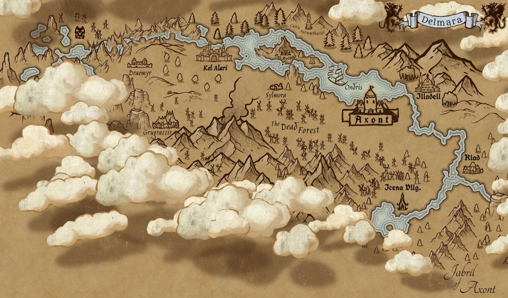

The Drowned Land
The name Delmara means the Drowned Land, a remembrance of the Great Deluge that reshaped the land once known as Aurumveldor.
It bears a name marked by flood, loss, and survival.

Delmara, meaning the Drowned Land, is one of the three main regions of Eadria.
The name Delmara means the Drowned Land, a remembrance of the Great Deluge that reshaped the land once known as Aurumveldor.
It bears a name marked by flood, loss, and survival.
Before the Great Deluge, Delmara was known by various names. In historical context, that earlier land is now referred to as Aurumveldor.
The treacherous Deadrock serves as a harsh natural barrier between Delmara and Eadria. Though it can technically be traversed by a mountain ascent from Eadria, the way is rife with fearsome creatures and grim legends, and few dare attempt the crossing.
Alarian Concord: Kel Alari, Bol Boldihr, and Gravenhold. Rule over Gravenhold is unrecognized by its inhabitants.
Realm of Vireldon: Axont, Illadel, Klad, and Icena. Rule over Klad and Icena is unrecognized by their inhabitants.
Unclaimed: Grugrazzir.
Historical: Dughfaldur.
Once the Ondris River, the Ondris Sea took the place of Aurumveldor during the Great Deluge.
Once a thriving city of Aurumveldor, Dughfaldur now lies entombed beneath the Ondris Sea, its grand halls and bustling streets drowned during the Great Deluge.
The ruins serve as both a tomb and an enigmatic treasure trove, holding the secrets of a bygone age, untouched and shrouded in mystery.
Though few in Eadria realize it, Delmara is connected to Aurnoore through the vast and perilous Underdeep.